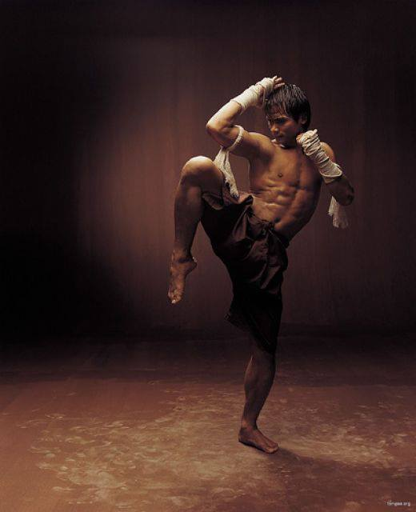

Günümüzde antik savaş sanatları sportif kurallar sebebiyle orijinal halinden uzaklaşmıştır. Asıl amacı olan insanların kendini savunma ve hayatta kalma becerilerine sahip olmaları için geliştirilmiş olan teknik yapıları; spor karşılaşmalarında kullanılamayacağı için ya yasaklanmış ya da modifikasyonlar geçirmiştir. Savaş sanatları uygulayıcıları her zaman bir yarışmaya katılma amacıyla bu sanatlarla uğraşmazlar. Çoğu zaman amaç kişinin kendini ve sevdiklerini her koşulda savunabilmesidir.
